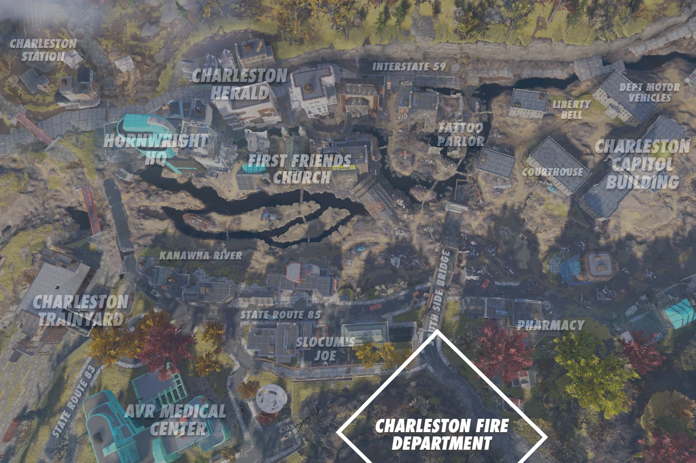
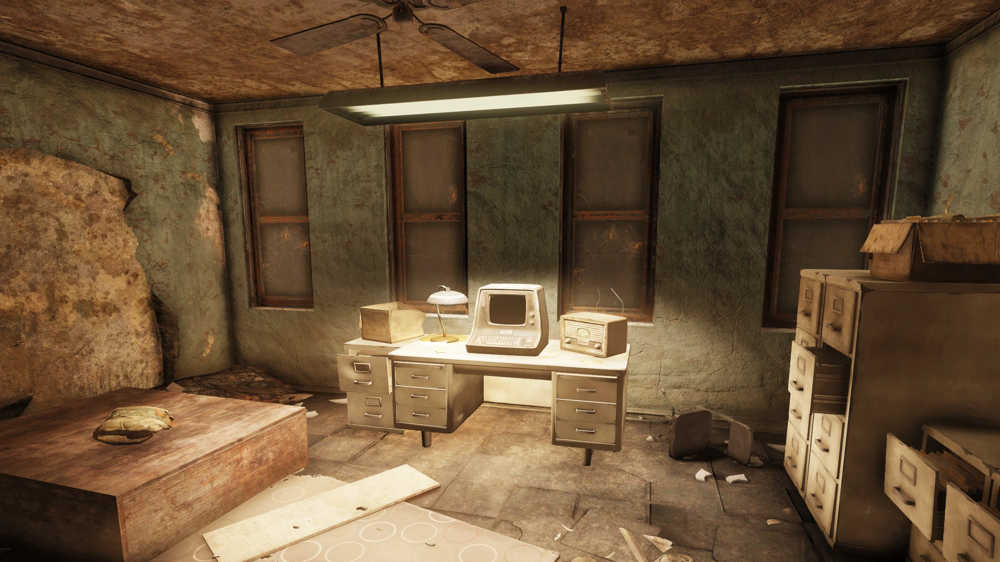
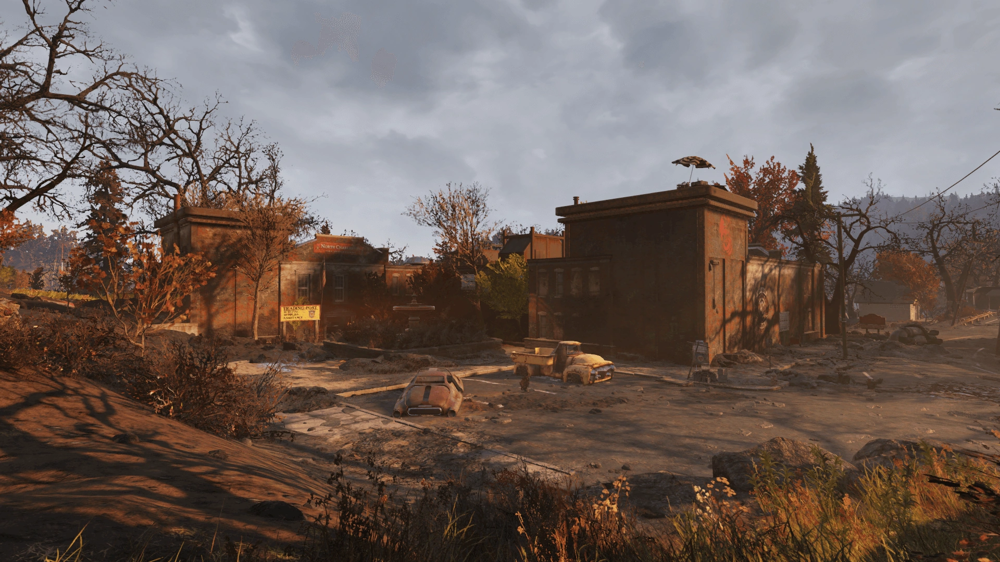
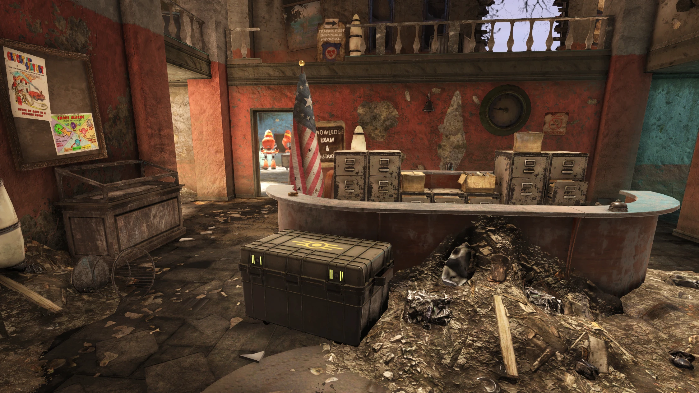
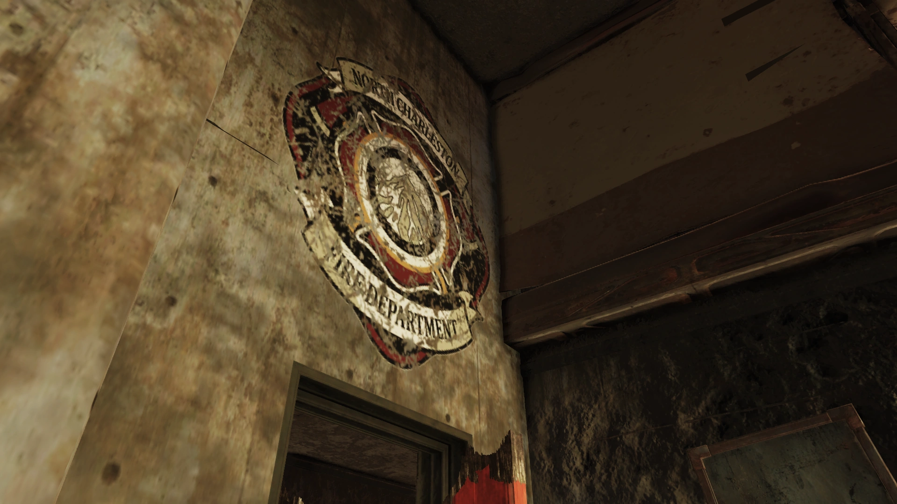
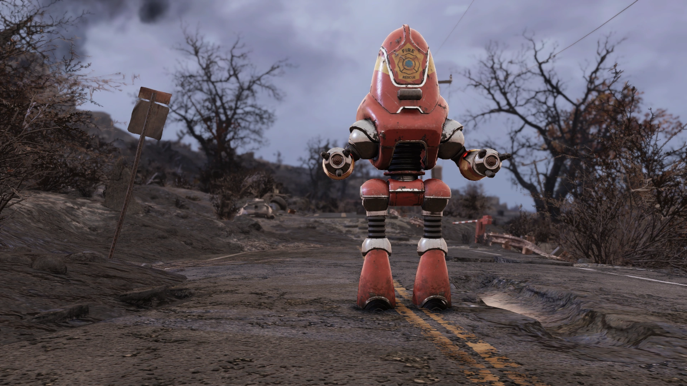
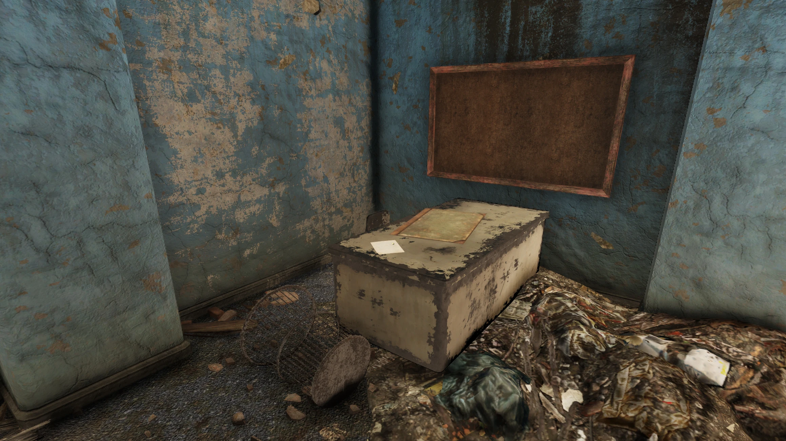
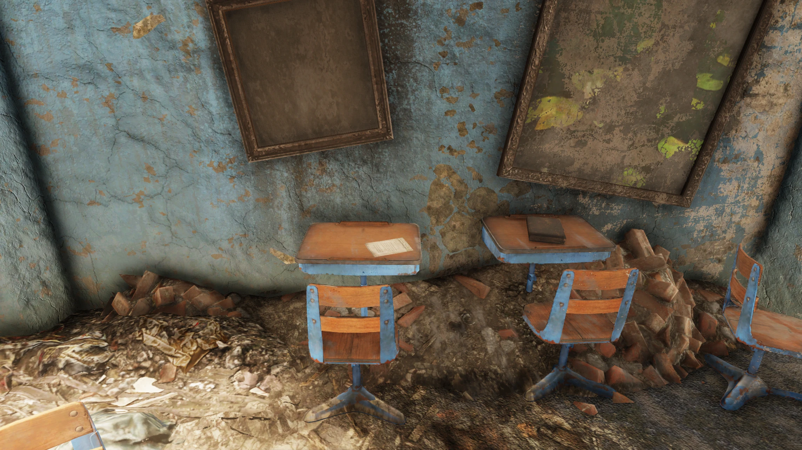

Charleston Fire Department
チャールストン消防署
概要
チャールストン消防署（正式名称：North Charleston Fire Department Station）は、アパラチアのチャールストン市にあるロケーションです。
大戦後のチャールストンにおける復興活動の中心地であり、消防士たちはやがてレスポンダーの主要な戦力となりました。
スコーチの脅威に対抗するため、メロディ・ラーキンと副官ハンク・マディガンの指揮のもと、精鋭部隊「ファイア・ブリーザー」が結成されました。
2096年にレスポンダーが壊滅すると、消防署はミュータントに占拠され放棄されました。
しかし2103年までに施設は奪還され、レスポンダー所属の消防プロテクトロンが警備にあたっています。新たにファイア・ブリーザーへの入隊を目指す者たちのために、署は再び門を開いています。
レイアウト
チャールストン消防署は、森林地帯の端に位置するL字型の2階建て建物です。レスポンダーの交易所であることを示す看板があり、チャールストンF.D.のロゴが入った赤いプロテクトロンが配置されています。
正面玄関の受付の前には監督官のスタッシュがあります。
受付の奥にはファイア・ブリーザーの知識試験と登録が行われる教室があります。建物内には試験対策に役立つメモが複数あります。ファイア・ブリーザー志望のティファニー・ブラントレーがこの部屋を歩き回って試験勉強をしているのを見かけることができます。
受付近くの廊下からガレージに行け、消防車やアーマー作業台・武器作業台のあるワークショップエリアがあります。
施錠されたセキュリティゲート（ピックロック1）の奥に武器と弾薬箱があり、ターミナル（ハッカー1）でも開錠できます。
2階にはベンダーボット・マックと交易所があります。マスターターミナルがあるオフィスには知識試験のカンニングペーパーも。
屋上には2階の階段からアクセスでき、南の道路を見渡せる即席の見張り台があります。

主なアイテム
ホロテープ・メモ
- Anti-Scorched tactics — メモ。教室エリアの大きな金属デスク上。
- Asphyxiation and you! — メモ。教室エリアの小さなデスク上。
- Charleston Herald - Man vs. Machine — メモ。2階のオフィスの机上。
- Knowledge exam cheat sheet — メモ。2階、マスターターミナル横の机上。
- Fire Breathers' first aid guide — メモ。ガレージのロッカー内。
- Mine signaling quick reference — メモ。1階ウェイトルームのロッカー内。
- Madigan scouting report - Garrahan — ホロテープ。2階オフィス、マスターターミナル横。
- Overseer's log - Firehouse — ホロテープ。正面ロビーの監督官のスタッシュ内。
その他
- 設計図コード（ライフル / ショットガン / サポート） — マスターターミナルから取得。
- Plan: Vault 76 jumpsuit — 2階の棚。
- Stealth Boy — 屋上北西の木製見張り塔。
- ウェイトルームの器具を解体すると約80個の鉛が取得可能。
発見できるホロテープ・メモ
場所：正面ロビーの監督官のスタッシュ内
監督官：監督官ログ。チャールストン消防署。
自動化はかつてウェストバージニアの生活そのものでした。今ではそれだけが残っています。レスポンダーが設置したこのトレーニングプログラム——何人の生存者がこれをくぐり抜けたのでしょう。自ら進んで火の中に飛び込む。人を救う。それには特別な使命感が必要です。危険が変わっても、彼らはその精神を守り続けたようです。彼らは誰よりもスコーチと至近距離で戦い続けた。彼らが何を知っていたのか、私は見つけ出す必要があります。
場所：2階オフィス、マスターターミナル横の机上
メロディ：録音してもいい？
マディガン：あんたが隊長だろ、メロディ。俺の許可はいらないよ。
メロディ：ふん。で、外の様子は？
マディガン：生存者を何人か見つけた。俺を見た瞬間に銃を撃ってきた。他と同じだ。
メロディ：いつも通りね。ブレア山より南にまともな頭の持ち主はいないみたい。他には？
マディガン：灰は予想より早く積もってる。でも以前のチームの地図を見る限り、広がりは止まってるようだ。
メロディ：つまりウェルチ、ベックリー、ルイスバーグとその周辺だけ失ったってこと。ささやかな幸運ね。
マディガン：あ、それと本当にいいニュースがある。ガラハン鉱業だ。
メロディ：「いいニュース」と「ガラハン鉱業」が一緒に聞けたのは久しぶりね。
マディガン：だよな。でもあのエクスカベーターアーマー——会社は潰れたけど、あれは頑丈らしい。設計図もまだ本社にあるって噂だ。もしあれを作れるようになったら、パトロールがどれだけ変わるか想像してみろよ。
メロディ：住民もそう簡単には撃ってこなくなるかもね。
マディガン：そうだ。1日か2日くれたら、また行って——
メロディ：ダメ。ガラハンは待てる。あんたは休め。モーガンタウンに行きなさい。エクスカベーターアーマーは逃げない。行って。
著者：クレア・ハドソン博士 ／ 場所：教室の大きな金属デスク上
一つだけはっきりさせておきたい——スコーチは致命的です。存在そのものへの脅威です。もし彼らを倒す、あるいは少なくとも封じ込める方法を見つけられなければ、彼らが広がり、道にある全てを変異させるか破壊しないと考える理由はありません。
スコーチビーストに遭遇した場合、全力で距離を取ってください。銃を持っていて閉所から撃てるなら理想的です——スコーチビーストは狭い場所に入れません。強い放射線を出すことも覚えておいてください。近接戦闘を避けられない場合はRad-Xの服用を。
スコーチ化した人間はレイダーのように戦ってください——ただし致命的な疫病を持つレイダーです。感染リスクを下げるため距離を保つことが最重要です。カバーに入り、必要なら後退し、絶対に近づかせないでください。
提供：ガラハン鉱業 労働者保護チーム ／ 場所：教室の小さなデスク上
呼吸はお好きですか？もちろん！みんな好きです！でも現代の鉱山には危険がいっぱい。
火災の場合：呼吸器がない煙の中に？近くの布を水に浸して口を覆い、低い姿勢で安全な場所へ！
水害の場合：酔っ払いのラリーおじさんと同じで、鉱山に水が出ると手に負えなくなります。異常な排水を見つけたら直ちに上司に報告！
ガスの場合：ノックノック！誰？鉱山の中の謎のガス！謎のガスが……あああ！死んだ！——鉱山のガスは冗談じゃありません！異臭を感知したら即座に退避！
チャールストン・ヘラルド紙 2077年10月18日（月）ルイスバーグ ／ 場所：2階オフィスの机上
最初のつるはしがアパラチアの鉱脈に食い込んで以来、ホーンライト・インダストリアルとガラハン鉱業は対立してきました。ホーンライトがブレア山の頂上にロックハウンドを建設すれば、ガラハンはエクスカベーター・パワーアーマーを発表して応戦。
最新の一手はホーンライトから——地元のテック新興企業アトミック・マイニング・サービスと共同開発した完全自律型ロボット採掘ユニット「オートマイナー」の公開です。
ガラハンのCEOヴィヴィアン・ガラハンは技術革新ではなく爆弾発言で応じました——「Man Vs. Machine」チャレンジ。24時間ぶっ通しの岩石粉砕対決で、ホーンライトのオートマイナーとガラハンのエクスカベーターアーマー装着鉱夫が直接対決します。
場所：2階のオフィス、マスターターミナル横の机上
グレッグ、これがファイア・ブリーザー知識試験の答えだ。
俺たちは一緒にやるか、やらないかだ。
これを他の奴に見つけられるなよ、いいか？
Q1 - 3) できるだけ早く退避する
Q2 - 2) 水で濡らした布
Q3 - 1) 火傷を清潔な包帯で優しく巻く
Q4 - 2) 直ちに撤退
Q5 - 3) 浄水1、アッシュローズ2、ブライト2、スートフラワー2（2番だったらよかったのに）
Q6 - 2) 後退して遠距離から銃で攻撃
Q7 - こいつは……俺たちはよく分かってるだろ。だからここにいるんだ。
場所：ガレージのロッカー内
冷湿布を当てる
3. 火傷を清潔な包帯で優しく巻く
疾病治療薬：
以下の材料を集め、コンロや調理鍋で調合してください。
森林地帯の植物：煮沸水1、ファイアキャップ2、スナップテール2、ブラッドリーフ2
灰の山の植物：浄水1、アッシュローズ2、ブライト2、スートフラワー2
場所：1階ウェイトルームのロッカー内
ファイア・ブリーザー 信号クイックリファレンス
鉱山内やグループ行動中は会話を最小限に。信号ランプで以下を伝達：
長1回 + 短1回 — 前進
長2回 — その場で停止
長1回 + 短1回 + 長1回 — 直ちに撤退
連続点滅 — 危険
以前鉱山で働いていた方へ：敵対的な生存者が旧式の信号を使って待ち伏せを仕掛ける事例が発生したため、信号を変更しました。旧式の信号を見たら、友軍からのものではない可能性があります。
ターミナルエントリ
消防署にはファイア・ブリーザーのマスターターミナルとトレーニングシステムが設置されています。

メッセージアーカイブ（メロディ・ラーキンからの通達）
宛先：全現役ファイア・ブリーザーへ
よし、皆の衆。上からのお達しだ——マディガンの帰りをこれ以上待つ時間はない。彼なしでやるしかない。
明日、ビッグベンドに出撃する。集合地点はラスティ・ピック。装備を整えて0700までに移動準備完了のこと。
今夜はよく眠れ。明日、俺たちはアパラチアを救う。
|| メロディ ||
宛先：全現役ファイア・ブリーザーへ
トンネル作業用の爆薬が現場にある間、射撃場は別途通知があるまで閉鎖する。
再開したらメッセージを送る。それまでは、怒りを別の健全な方法で発散してくれ。
|| メロディ ||
宛先：全現役ファイア・ブリーザーへ
全ファイア・ブリーザーへ通達。
本日1800に試験室で会議。例外なし。
スコーチに対する作戦がある。
アパラチアを救いたいなら、午後6時までに座席に尻をつけろ。
|| メロディ ||
宛先：全現役ファイア・ブリーザーへ
マディガンの最新の「遠足」から有力情報。
ガラハン鉱業の「エクスカベーターアーマー」は——未来の採掘方法とはいかなかったが——実はとんでもなく頑丈な代物らしい。煙・火・ガスに耐性あり。しかもガラハンは製造技術を全て自社の地下室に保管してたとか。
ブラムウェル方面に行くファイア・ブリーザーは、旧ガラハン本社に立ち寄って古いスーツがないか探してみてくれ。
|| メロディ ||
宛先：全現役ファイア・ブリーザーへ
スコーチに穴を開けやすくする技術の有力な手がかりがある。回収の志願者を募集する。
ビッグベンドはまだ奴らの手中にあるため、山越えルートで向かう。その先はワトガの中心部——まともな大人の監視がなくなって暴走状態らしい。
そのため、志願者には最高の火力を装備させる。興味のある者はマディガン副官に申し出ること。
|| メロディ ||
宛先：全現役ファイア・ブリーザーへ
多くの者が聞いている通り、スコーチの流入源を特定した——ビッグベンド・トンネルだ。初期報告では、これまで遭遇した連中はほんの始まりに過ぎない。
座して親指をしゃぶっているつもりはないが、計画なしに突入して命を無駄にするつもりもない。
別途通知があるまで、全パトロールと偵察班はビッグベンド・トンネルとその周辺を避けること。そして銃なしで署を出るな。
|| メロディ ||
舞台裏
- ゲーム内の施設は架空ですが、現実のチャールストン消防局はウェストバージニア州チャールストンに8つのステーションを持っています。
- 正面の看板やロゴは、サウスカロライナ州ノースチャールストン消防署の現代のデザインに似ています。
登場作品
チャールストン消防署は『Fallout 76』にのみ登場します。
ギャラリー






チャールストン消防署は、Fallout 76の序盤で最も印象に残るロケーションの一つです。
メロディ・ラーキンのターミナルメッセージを読むと、ファイア・ブリーザーズがどう活動し、どう戦い、最後にどう覚悟を決めたかが見えてきます。「明日、ビッグベンドに出撃する…今夜はよく眠れ。明日、俺たちはアパラチアを救う」——彼女がこのメッセージを送った時、マディガンはまだ帰っていませんでした。それでも待たずに出撃を決めた。
カンニングペーパーの最後の答え「Q7 — こいつは……俺たちはよく分かってるだろ。だからここにいるんだ」も重い。Q7の問題は「スコーチに感染した幼なじみを捕まえた。どうする？」で、正解は「できるだけ慈悲深く命を絶つ」。書いた本人もグレッグも、その答を知っていたからこそファイア・ブリーザーズに志願した。
ここに来ると、プレイヤーは消えた人々の遺した教材で試験を受け、消えた人々の残したプログラムで合格し、消えた人々の名前でファイア・ブリーザーズに登録されます。火の中に飛び込む覚悟をした人間は全員いなくなったけれど、その精神を引き継ぐ新人を、赤いプロテクトロンが今も待っています。
This article was created by translating and editing Charleston Fire Department from Nukapedia: The Fallout Wiki.
Licensed under the Creative Commons Attribution-Share Alike License (CC BY-SA 3.0).
コミュニティ維持のため、寄付を受け付けております。
> COMMENTS